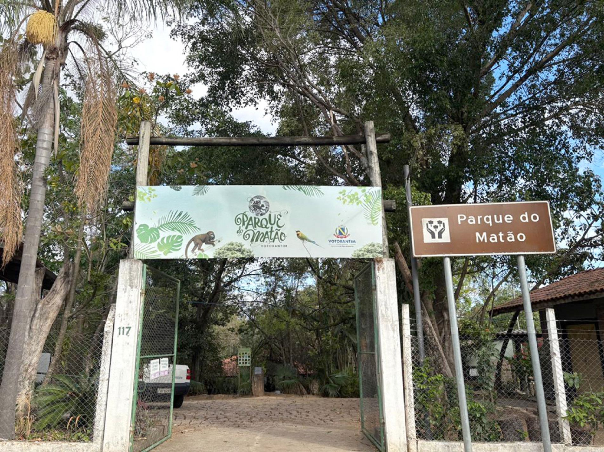
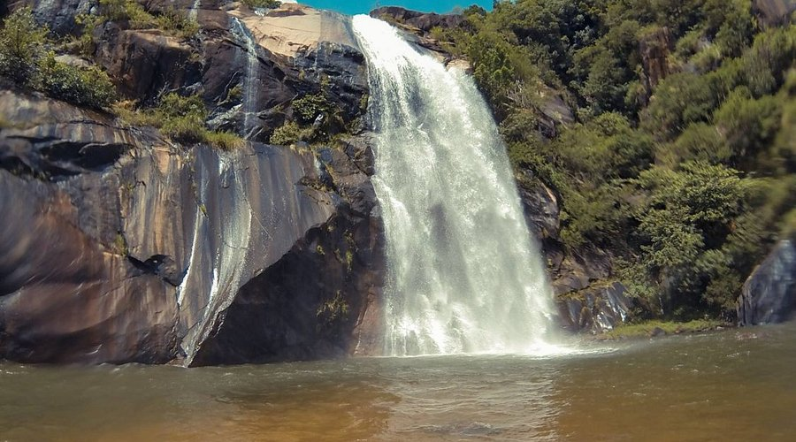
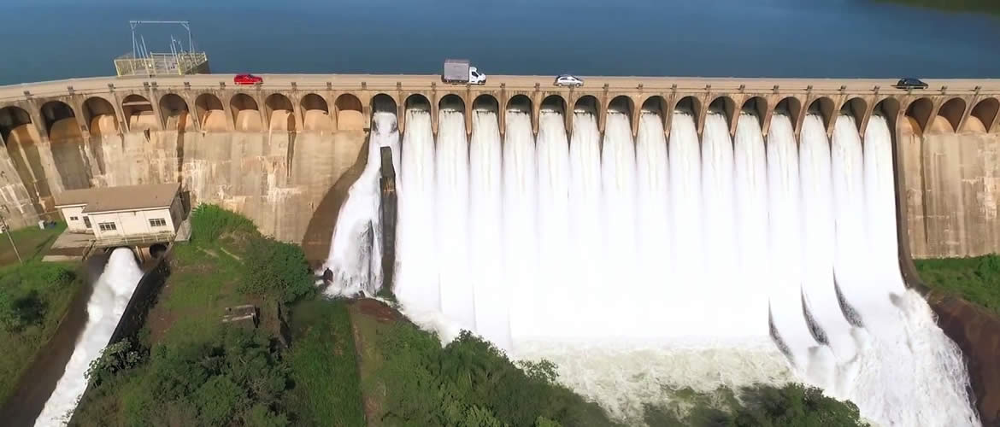
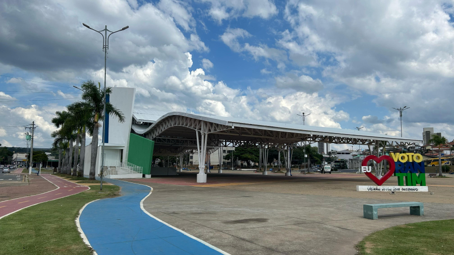
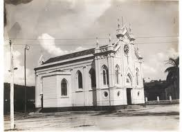
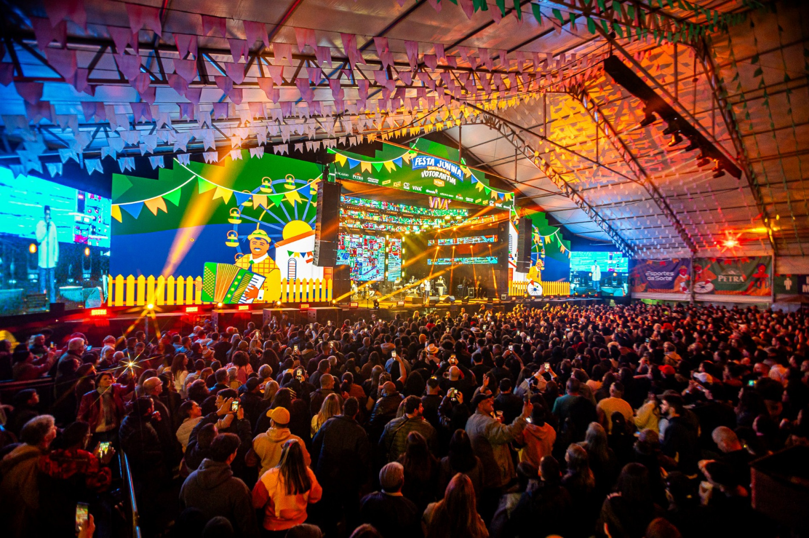

O Parque Ecológico do Matão é um dos principais pontos turísticos de Votorantim, ideal para caminhadas e lazer em família.

A Cachoeira da Chave oferece belas paisagens naturais e é muito visitada pelos moradores da cidade.

A represa é ideal para pesca, passeios e esportes aquáticos, sendo um dos pontos mais conhecidos da região.

A praça central de Votorantim recebe eventos culturais, feiras e apresentações durante o ano.

O mosteiro é conhecido pela tranquilidade e pela arquitetura religiosa que atrai visitantes.

A tradicional Festa Junina de Votorantim reúne shows, comidas típicas e diversão para toda a família.